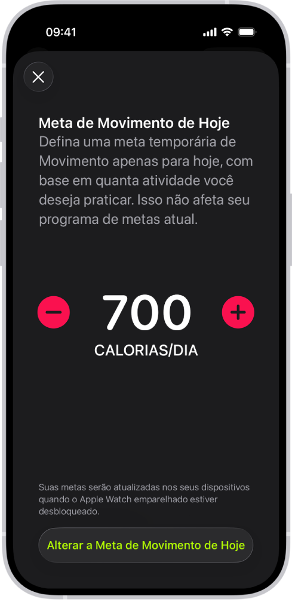

Calorias no seu ritmo
Uma contagem pensada para você — metas e porções que se ajustam à sua rotina, sem planilhas nem excesso de números.
O app observa o que você come no dia a dia e sugere um ritmo sustentável, em vez de um recorte genérico que não cabe na sua semana.
Você vê o essencial com clareza: o que já entrou, o que ainda cabe e como isso se encaixa no restante da sua vida fitness.